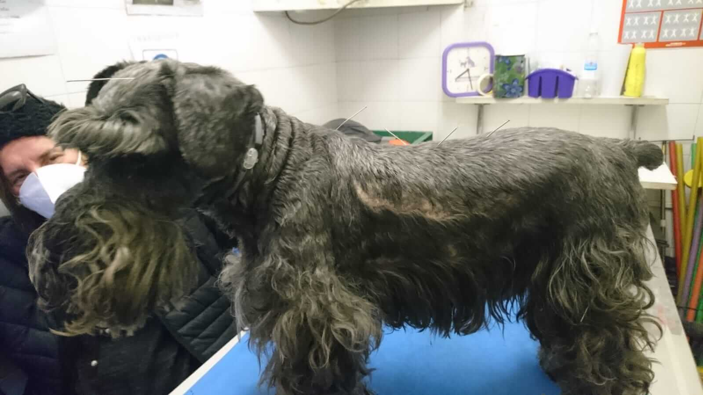
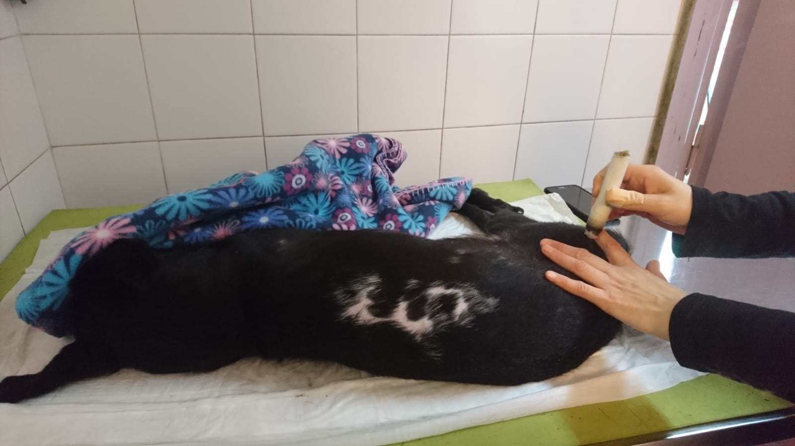

MEDICINA HOLISTICA
Esta es un área a la cual el CMV dedica especial atención. El personal a cargo realiza una constante capacitación en nuevas técnicas junto con la más amplia aparatología de vanguardia. Es nuestro principal soporte para los pacientes posquirúrgicos y con afecciones neurológicas y músculoesqueléticas.
Acupuntura

Moxibustión
